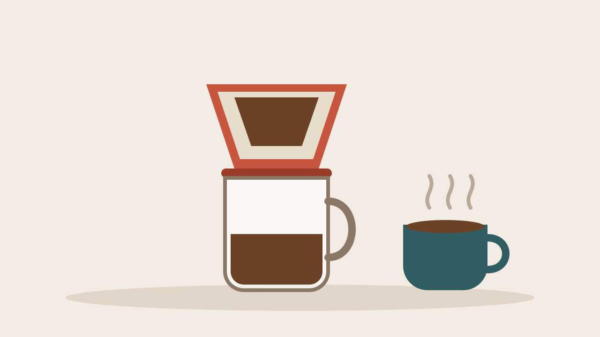
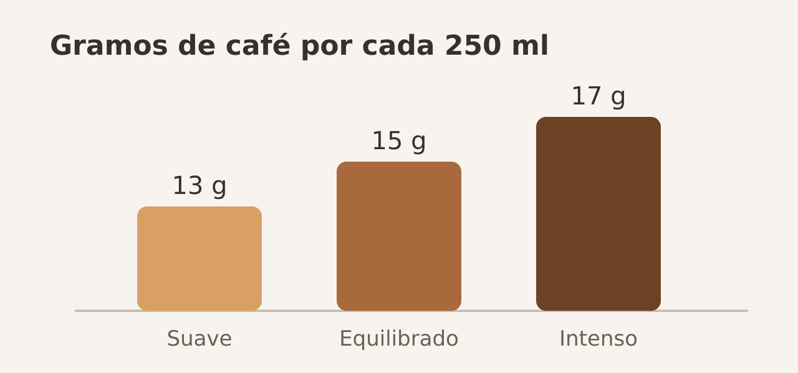

Café de filtro en casa: guía práctica
Con una cafetera de goteo, agua a la temperatura justa y la molienda adecuada se consigue en casa un café limpio y aromático. Esta guía resume lo esencial en cinco minutos de lectura.

Una cafetera de filtro sencilla basta para empezar.
Qué necesitas
- Café en grano recién tostado, mejor de las últimas cuatro semanas.
- Un molinillo que permita una molienda media y uniforme.
- Un filtro de papel o de tela, aclarado antes con agua caliente.
- Agua filtrada o de mineralización débil.
- Una báscula de cocina, aunque una cuchara medidora también sirve.
La proporción
El punto de partida más habitual es 1 gramo de café por cada 16 ml de agua. A partir de ahí se ajusta al gusto: más café da una taza más intensa y con más cuerpo; menos café, una taza más ligera y dulce.

Cantidad orientativa de café para una taza grande.
Paso a paso
- Calienta el agua hasta 92–96 °C: unos treinta segundos después de que hierva.
- Muele el café justo antes de prepararlo, con un grano parecido a la sal gruesa.
- Coloca el filtro, acláralo con agua caliente y tira esa agua.
- Añade el café, nivélalo y vierte el doble de su peso en agua para que «florezca» durante 30 segundos.
- Vierte el resto del agua en espiral, despacio, en dos o tres tandas.
- Sirve en cuanto termine de gotear. El café recalentado pierde aroma.
Consejos rápidos
- Amargo: muele un poco más grueso o usa agua algo menos caliente.
- Ácido o aguado: muele un poco más fino o sube la cantidad de café.
- Conservación: guarda el grano en un bote opaco y hermético, lejos del calor.
Cambia solo una variable cada vez: así sabrás qué ha mejorado la taza.